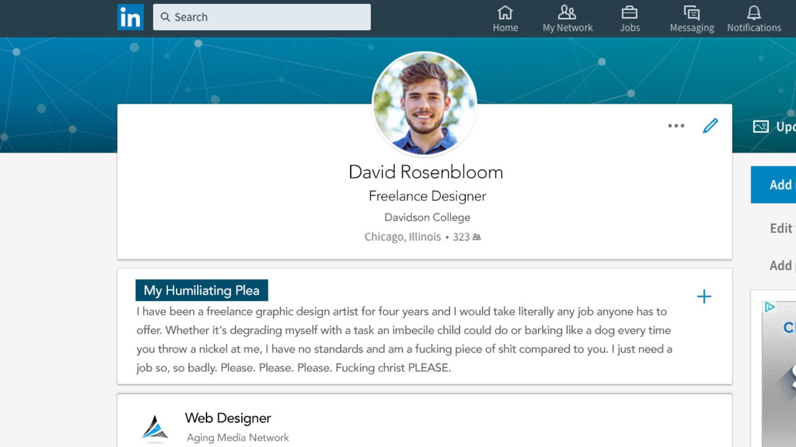

Everyday Hero: When This Pregnant Woman Couldn’t Find A Seat On A Train, This Man Decided To Stand On His In Solidarity
Well, this story absolutely proves that you don’t need a cape to be a hero.Zack Clifton will tell you he’s just a
normal guy, but his small humanitarian gesture on his morning commute yesterday shows just how extraordinary he
really is. When the 25-year-old graphic designer saw a pregnant woman who couldn’t find a seat, he knew he had
to do something about it. While others looked the other way, he decided to stand on his own seat in solidarity.
Sometimes it’s the smallest things that mean the most. It would have been easy for him to sit and do nothing, but
instead Zack chose to make a difference. Climbing atop his seat, he set aside his own comfort to spend the remainder
of the 45-minute commute in quiet solidarity with his fellow passenger. It was a simple act, but it sent an inspirational
message of support that lasted long after the ride was over. “I wanted to let her know that if she couldn’t sit,
I wouldn’t sit either,” said Zack, who almost never gets a seat in the morning, which makes his touching gesture
that much more powerful. “Sharing that hardship with her was the least I could do. We’re all in this together.”
“I wasn’t able to read my book,” Zack added. Wow! If only more people were so empathetic to pregnant women, the
world would be a much better place. Zack has truly showed us all that no moment is too small to make a human connection
with others. Share this story to encourage more people to do what’s right!'
Posted by: Morgana @ 2018-02-23
Game Changer: LinkedIn Is Adding A Feature Where You Can Really Fucking Beg

Great news, job seekers! The folks at LinkedIn are giving you the extra push you need to land that next job. The company
just announced that, as of this week, users will have access to new features that let them really fucking beg.
What a great option for all the pathetic little fucks out there! Called “Humiliating Plea,” the new feature offers
a suite of options for any job seekers looking to take their shameless supplication to the next level. From a recent
college graduate who would throw herself down a staircase for an unpaid internship to an unemployed father with
decades of experience who would lick the mud off the boot of anyone considering him for a permalance gig with no
health insurance, Humiliating Plea is bound to net sad little people everywhere more opportunities. The innovative
feature even adds “You are so smart and I am fucking stupid” a hundred times over at the bottom of every message
sent by a user with the mode enabled. If you’ve long ago given up on your dignity or are only now considering debasing
yourself to get something you want, you gotta check this out! For employers’ ease, Humiliating Plea users are signified
by a big, blue badge indicating that they have no other options. If these users are ultimately offered a position,
any proposed salaries are automatically reduced to 20 percent below market rate, with an accompanying note reminding
applicants that they’re lucky to get even a scrap of a paycheck. Additionally, recruiters have the option to click
the “Dance For Me, You Worthless Piece Of Shit” button on the profile of an applicant they have even a passing
interest in, which prompts the applicant to submit a video of them dancing in a demeaning way. Wow, it sounds like
the networking site has really streamlined the whole process! Kudos to the people at LinkedIn for continuing to
help all those sad sacks of shit who have no standards.',
Posted by: Zac @ 2018-02-23
They Said He’d Never Walk Again. But Who Were They, And Why Were They Saying Stuff About Him?
It’s an amazing story of a man faced with extraordinary circumstances. A diagnosis so daunting, it seemed almost insurmountable.
They said he would never walk again. But who were they, and why were they saying stuff about him? They said it
was impossible. They said his odds were dire. But who exactly was saying this stuff? People who know him, apparently.
Friends? Acquaintances? Either way, they said his situation was hopeless. Also, who is he? Whoever he is, it sounds
like he must be really sick. At least according to them. You have to be pretty confident to say something like
that about someone. Maybe they’re doctors? Regardless, we hope he gets better. For now, let’s just hope they’re
wrong, or at least overreacting. Whoever it is they are.Unless he’s a bad guy. Maybe this guy hurt them in some
way and that’s why they’re saying this stuff about him not being able to walk again. Who knows? Maybe this guy
kicks people all the time for no reason at all. In that case, maybe it’s a good thing that he’ll never walk again.
Justice served. On the other hand, they might’ve just said that stuff about him because they have some weird personal
issue with him that we don’t know about. For all we know, he’s a nice guy, and they’re the ones being unreasonable.
Trying to scare him by saying he’ll never walk again. What a weird way to get back at someone.What did he do to
make them hate him so much? But this is all just speculation. At the end of the day, we don’t know who he is, or
who they are, or why they said this stuff about him to us. And, honestly, we’re a little annoyed at this whole
situation, because we really didn’t ask to get dragged into what is clearly a very personal matter between him
and them. Is this an inspirational story? Hard to say. We don’t have enough details at the moment to determine
whether this is heartwarming or not. But you can be sure that we’ll keep you posted if they say any other stuff
about him.In the meantime, please tweet at us if you have any information regarding either them or the man they
said would never walk again, and be sure to check back for updates as this incredible story develops!',
Posted by: Esmeralda @ 2056-02-02